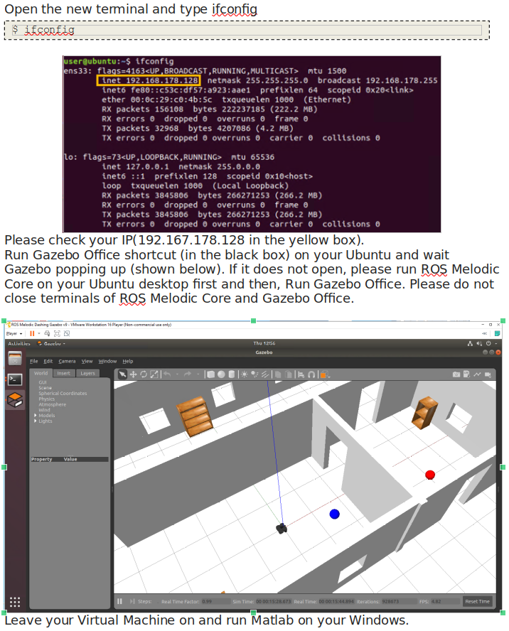

Development and validation of a virtual robotics environment enabling students to run ROS, Gazebo, MATLAB, and TurtleBot experiments remotely.
The pre-lab was developed to give senior undergraduate and graduate students a reproducible robotics environment before beginning localization, navigation, and path-planning laboratories.
The laboratory sequence had previously relied heavily on access to physical mobile robots and local laboratory infrastructure.
To support remote delivery, the robotics environment was rebuilt around a virtual machine containing Ubuntu, ROS, and Gazebo, with MATLAB running on the host computer and communicating with ROS over the network.
The virtual laboratory connected a simulated TurtleBot environment running inside Ubuntu with MATLAB running on the host computer through the ROS network.

The manual was written as a step-by-step workflow so students could establish the same environment before beginning the technical robotics laboratories.
A major part of the pre-lab was ensuring reliable communication between the host computer and the ROS environment running inside the virtual machine.
Students identified the VM IP address, connected MATLAB to the ROS master, and verified that ROS topics from the Gazebo simulation were visible across the network.
Topic discovery and ROS initialization were used to verify that MATLAB, ROS, and the simulated TurtleBot were communicating correctly before proceeding to later labs.
The lab material was not limited to ideal installation instructions. It also documented practical issues that could prevent students from completing the robotics labs.
These setup problems were reproduced and verified during development so that students could be supported during live laboratory sessions.
I developed and tested the virtual laboratory workflow, rewrote the student-facing instructions, verified the software and networking configuration, and supported students as they encountered technical issues during laboratory sessions.
The pre-lab established a common technical foundation for the subsequent ROS, localization, navigation, and path-planning exercises.
Once the virtual environment was established, students progressed into ROS operation, SLAM, localization, navigation, and path planning.
Introduction to ROS tools, simulated TurtleBot control, sensor visualization, mapping, localization, and autonomous navigation.